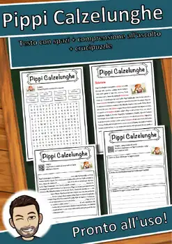
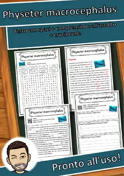
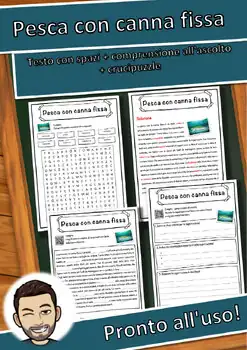
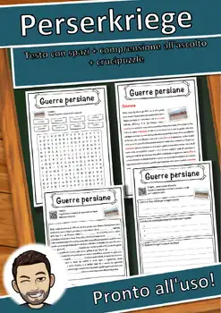
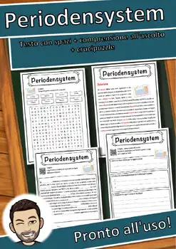

New resources
My newest resources appear here first. The list updates automatically.
48 resources

Poliomielite – Italian Reading Comprehension Worksheet (Scheda didattica)

Polaris – Italian Reading Comprehension Worksheet (Scheda): Cloze & Listening

Poker – Italian Reading Comprehension Worksheet (Scheda): Cloze & Listening
Poesia lirica – Italian Reading Comprehension Worksheet (Scheda didattica)
Podiceps cristatus – Italian Reading Comprehension Worksheet (Scheda didattica)

Podgorica – Italian Reading Comprehension Worksheet (Scheda): Cloze & Listening

Plutone – Italian Reading Comprehension Worksheet (Scheda): Cloze & Listening

Platone – Italian Reading Comprehension Worksheet (Scheda): Cloze & Listening

Platino – Italian Reading Comprehension Worksheet (Scheda): Cloze & Listening

Plantae – Italian Reading Comprehension Worksheet (Scheda): Cloze & Listening

Planetario – Italian Reading Comprehension Worksheet (Scheda): Cloze & Listening

Pizza – Italian Reading Comprehension Worksheet (Scheda): Cloze & Listening

St. Petersburg, Florida – Worksheet: cloze text, listening and word search

Pirenei – Italian Reading Comprehension Worksheet (Scheda): Cloze & Listening

Pirati – Italian Reading Comprehension Worksheet (Scheda): Cloze & Listening

Pippi Calzelunghe – Italian Reading Comprehension Worksheet (Scheda didattica)
Piper nigrum – Italian Reading Comprehension Worksheet (Scheda didattica)

Pinus – Italian Reading Comprehension Worksheet (Scheda): Cloze & Listening

Pinnipedia – Italian Reading Comprehension Worksheet (Scheda): Cloze & Listening

Pinales – Italian Reading Comprehension Worksheet (Scheda): Cloze & Listening
Pietra d'inciampo – Italian Reading Comprehension Worksheet (Scheda didattica)
Piet Mondrian – Italian Reading Comprehension Worksheet (Scheda didattica)

Piede – Italian Reading Comprehension Worksheet (Scheda): Cloze & Listening
Passer domesticus – Italian Reading Comprehension Worksheet (Scheda didattica)

Picidae – Italian Reading Comprehension Worksheet (Scheda): Cloze & Listening

Picea – Italian Reading Comprehension Worksheet (Scheda): Cloze & Listening
Piccione viaggiatore – Italian Reading Comprehension Worksheet
Piantagione – Italian Reading Comprehension Worksheet (Scheda didattica)

Pianoforte – Italian Reading Comprehension Worksheet (Scheda): Cloze & Listening

Pianeta – Italian Reading Comprehension Worksheet (Scheda): Cloze & Listening

Physeter macrocephalus – Italian Reading Comprehension Worksheet
Phoenicopteridae – Italian Reading Comprehension Worksheet (Scheda didattica)
Phascolarctos cinereus – Italian Reading Comprehension Worksheet
Pfund Sterling – Italian Reading Comprehension Worksheet (Scheda didattica)
Pfund (Gewicht) – Italian Reading Comprehension Worksheet (Scheda didattica)
Petroselinum crispum – Italian Reading Comprehension Worksheet

Petrolio – Italian Reading Comprehension Worksheet (Scheda): Cloze & Listening
Peter Tschaikowski – Italian Reading Comprehension Worksheet (Scheda didattica)

Peste – Italian Reading Comprehension Worksheet (Scheda): Cloze & Listening

Pesce – Italian Reading Comprehension Worksheet (Scheda): Cloze & Listening

Pesca con canna fissa – Italian Reading Comprehension Worksheet

Perù – Italian Reading Comprehension Worksheet (Scheda): Cloze & Listening

Pertosse – Italian Reading Comprehension Worksheet (Scheda): Cloze & Listening

Perserkriege – Italian Reading Comprehension Worksheet (Scheda didattica)

Permafrost – Italian Reading Comprehension Worksheet (Scheda): Cloze & Listening
Periodo francese – Italian Reading Comprehension Worksheet (Scheda didattica)

Periodensystem – Italian Reading Comprehension Worksheet (Scheda didattica)

Pergamena – Italian Reading Comprehension Worksheet (Scheda): Cloze & Listening
No resources found – try a different search term or filter.